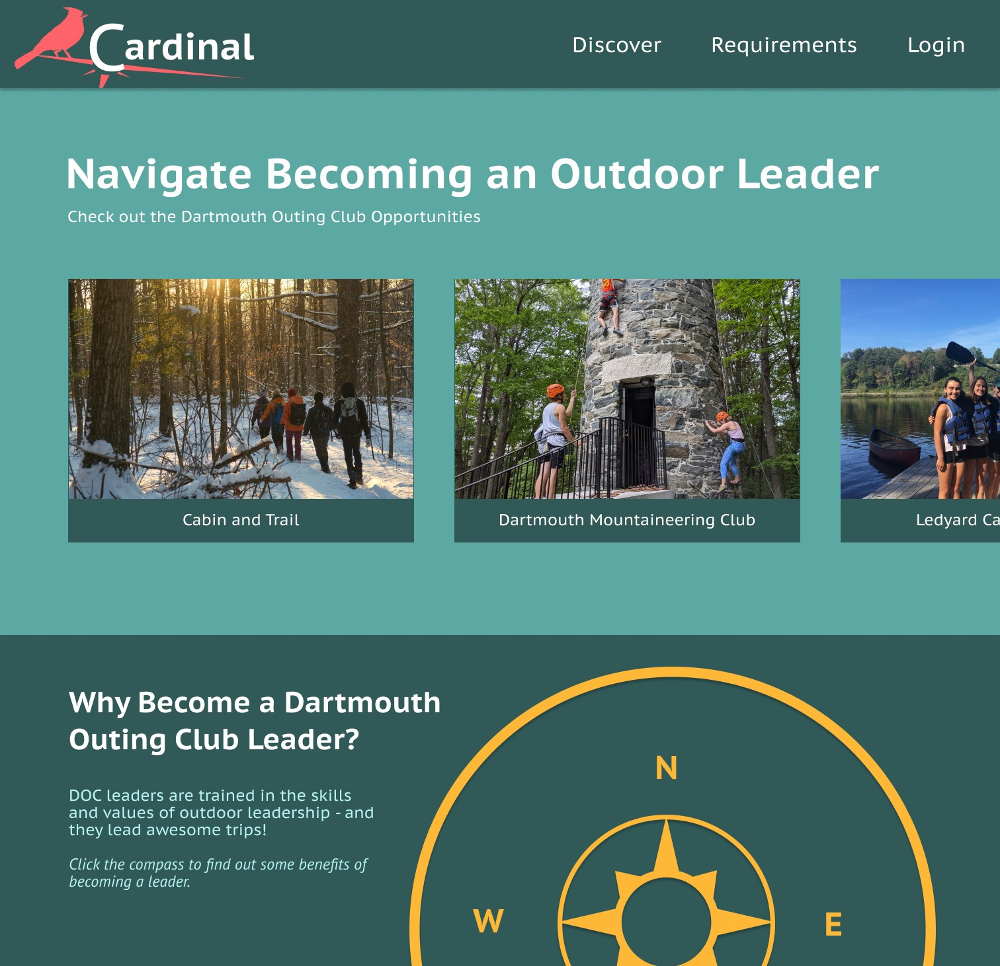
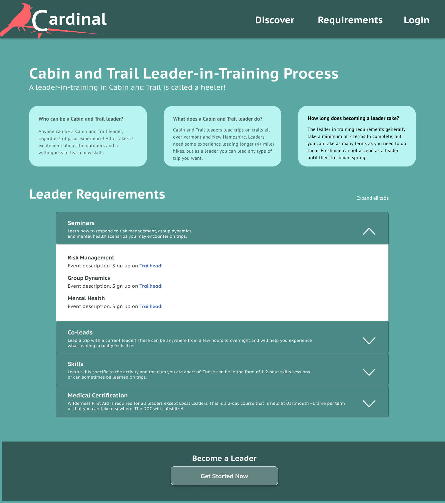
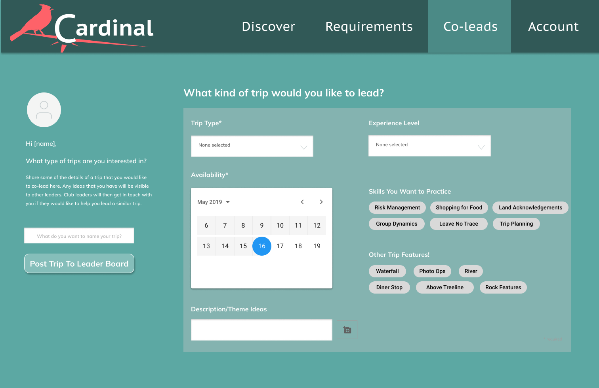
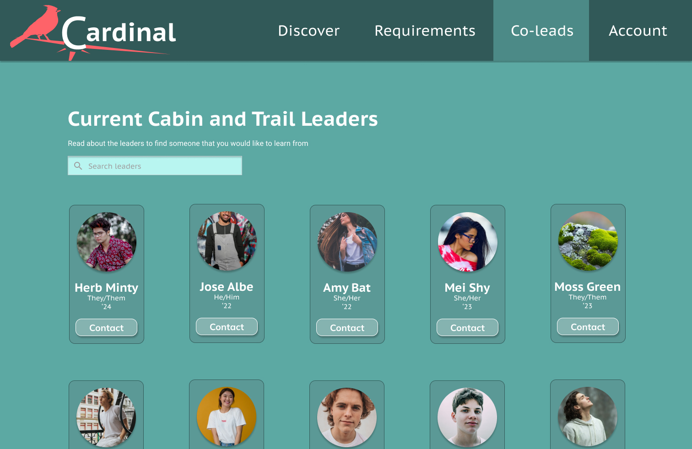

The Product: Cardinal
Cardinal aims to create a smooth and supportive journey for leaders in training.

Feature 1: Clear, Trackable Requirements
Cardinal provides consolidated and easily accessible information about becoming a leader in all Dartmouth Outing Club subclubs, as well as ways for leaders-in-training to track their requirements.

Feature 2: Equitable Access to Current Leaders
Leaders-in-training have the opportunity to either pitch a trip idea that they are interested in and have leaders reach out to them or see and connect with current leaders.


Background Research
The Dartmouth Outing Club is an umbrella organization that supports 17 subclubs, each of which focus on a different outdoor activity. In order to lead trips for a subclub, a student needs to go through a leader training process. We started our research by finding where prospective leaders can start the process. Google searching "How to become a leader in the Dartmouth Outing Club" will bring you in two clicks to a document with links to each subclub's requirements. Some subclubs also send out termly emails with instructions on how to become a leader. However, these methods are not intuitive and hard to parse. From this research and our interviews afterwards, we learned that finding the resources and the motivation to become a DOC leader relies on a person being in the right place at the right time in order to hear verbal instructions and encouragement for starting the process.


“On paper” resources for starting the leader-in-training process include a Google doc with links to subclub requirements and emails with these same links. All of these methods are difficult to locate and parse without verbal instruction.
After a leader decides to start the process, they need to figure out how to track their leader requirements. We learned that clubs use different methods ranging from complicated spreadsheets to no official tracking at all.


Dartmouth Mountaineering Club and Cabin and Trail spreadsheets for tracking leader requirements, respectively. Each row represents one leader-in-training.
In our research for this project, we focused on Cabin and Trail (the hiking subclub) and the Dartmouth Mountaineering Club that primarily engages in rock climbing. We chose only two clubs to narrow our scope, and we chose these two because they best represented the range of skills that are taught across the DOC, from more technical knots and climbing techniques to the soft skills of successfully managing group dynamics on backcountry hikes.
From our background research, we learned that the resources for becoming a leader in the DOC do exist but are scattered across the internet and are difficult to access and easily use. Our findings helped us come up with interview questions that focused on how leader requirements are actually tracked and what the bright spots and pain points of the current process are.
User Research
In order to better understand the experience of becoming a leader for the Dartmouth Outing Club, we conducted in-depth interviews with multiple stakeholders. Our research included current leaders, leaders-in-training and students who did not complete the leader process.
We then developed two personas that represented two aspiring leader types:
Karl grew up backpacking with his family and went to rockclimbing camps over the summer. He entered Dartmouth confident in his outdoor abilities and in his desire to become a leader.
Katrina comes from Houston, Texas and has never been hiking before. She went on a required first year outdoor trip and wants to go on more. However, she feels behind in her outdoor knowledge.
We mapped out the journey of the leader process for both of these personas in order to understand the enriched and poached parts of their journeys.


Journey maps for Karl and Katrina through the leader-in-training process
Pain Points and Insights from the Leader Journey
After reviewing the users' journeys and interview data, we identified three pain points in journeys of applicants similar to Katrina Ma.
- Inaccessible Leaders — Leaders-in-training struggle to complete co-lead requirements if they do not have personal connections and contact information for current outdoor leaders.
- Perceived Inadequacy — Students who join the DOC with less outdoor exposure, especially people of color, start the leader process feeling like they are in the minority and already behind.
- Requirements Documentation — Leader requirements are rarely tracked by leaders or LITs, prompting minimal encouragement of the process of skill-building itself.
Defining Design Priorities
-
1
Create opportunities for prospective leaders who do not have prior relationships to connect with current leaders
-
2
Validate all starting points in the leader journey and the backgrounds of all prospective leaders
-
3
Create a system that both simplifies leader requirement tracking and portrays the holistic learning for becoming a leader
First Sketches and Greyscales
In our first iterations we decided to focus on the problem of tracking leader requirements. In keeping with our design priority to simplify tracking and encourage focus on the leader process, we wanted to create multiple visualizations of requirements that convey the journey without hierarchy.


Initial sketches and greyscale wireframes
The Pivot: A Bird's Eye View of the Leader Process
We showed our grayscales to several users, students in the CS52 Web Development course, and our professor and advisor for this course. While reception was generally positive, people also expressed concerns. One user wondered whether our model actually simplified the process more than a spreadsheet, and another wished there was more support built in for actually planning out the requirements. Our professor summed up these hesitations for us by challenging us to broaden our focus and ask what the pain points are for the leader process as a whole. Perhaps the answer to our need was not just portraying the requirements more clearly, but supporting leaders-in-training with the entire leader process. With this in mind, we conducted 3 more user interviews, came up with 6 pain points and 17 How Might We questions, and did another round of brainstorming and sketching that lead to our second prototype.
Second Prototype and Testing
We created a second set of grayscales based on our additional user research and conducted user testing with this set as well. Below are some of the major changes we incorporated as a result of feedback. We also got a lot of positive feedback, including, "This is something that I am really glad that someone is trying to improve."
Major changes from feedback:
| Insight | Change |
|---|---|
| Main page doesn't have enough info on what a leader is or why to become one | Added animated visual with benefits of becoming a leader |
| Requirements page still doesn't give LITs a starting point | Added FAQ at top + button to expand all tabs |
| Pitching process is complicated, doesn't address scheduling conflicts | Simplified pitching with tags and minimal inputs + availability input |

On Trusting the Process and Embracing Change
We started this process with a clear need: a complicated and confusing leader-in-training process that needed to be simplified. However, at the beginning of the process we mistook a clear need for a fully-defined one. Once we really dove into user research and worked to shed our bias of what we thought people wanted, we were able to figure out what would actually help them: a platform that fully supports students through the leader-in-training process.
At first, it was hard to let go of some of the original work we had done on better representing leader requirements at first. Eventually though, we learned to embrace and appreciate pivots, especially when we saw the excitement our users had for our new ideas.
Taking Flight
The next steps necessary for this project include:
- Testing a proof of concept for co-leads (does matching people over shared interests and availability really work?)
- More user testing with our Figma prototype
- Building out the actual website
- Linking to or integrating with Trailhead, the DOC's trip sign-up website
A note on website development: this project was done in collaboration with Abigail's final project in her Full Stack Web Development course. In this course we were able to begin building out some of the functionality for viewing subclubs and tracking requirements.